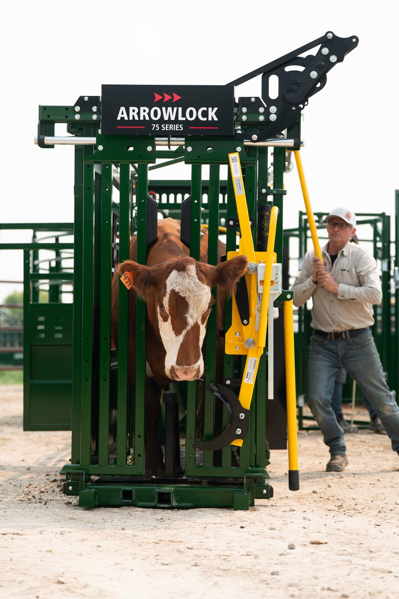
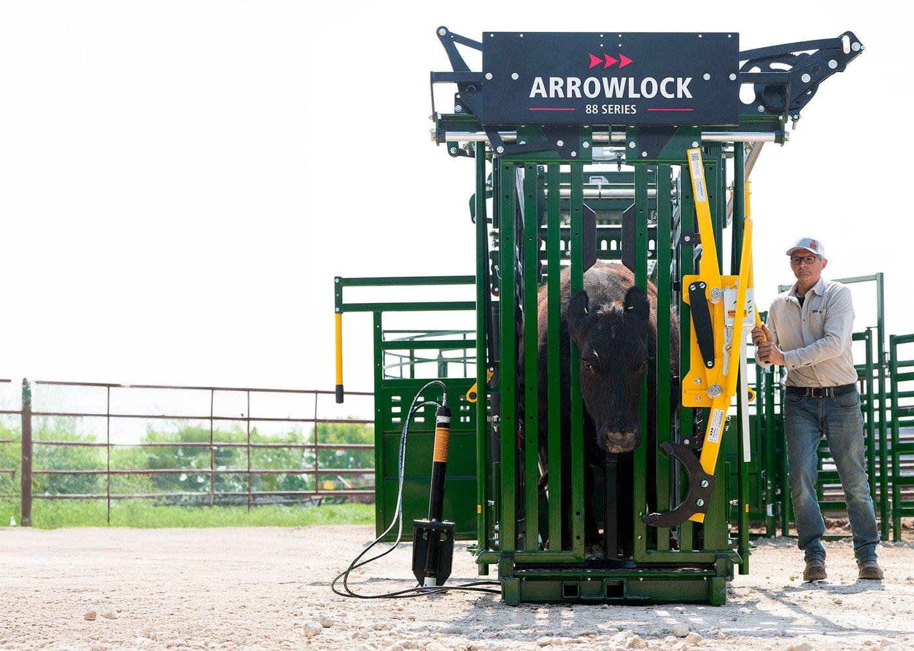
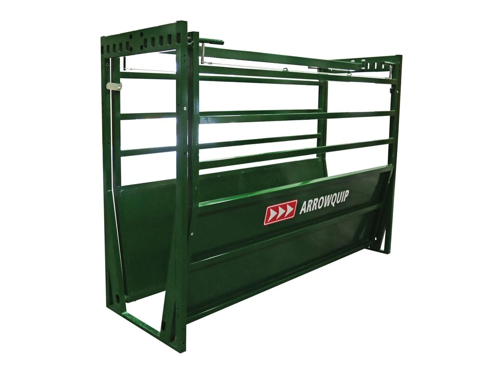
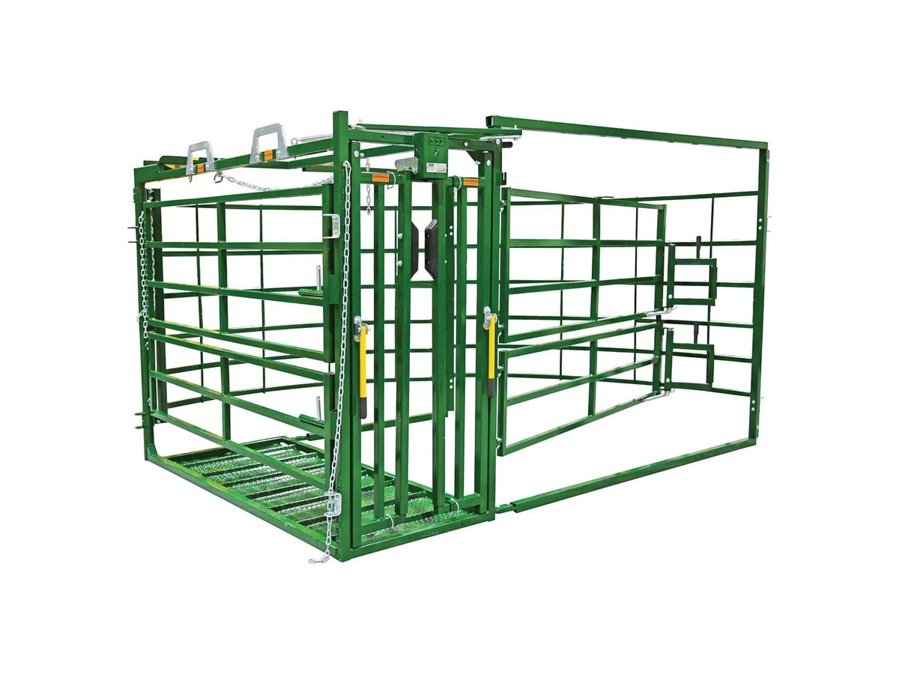
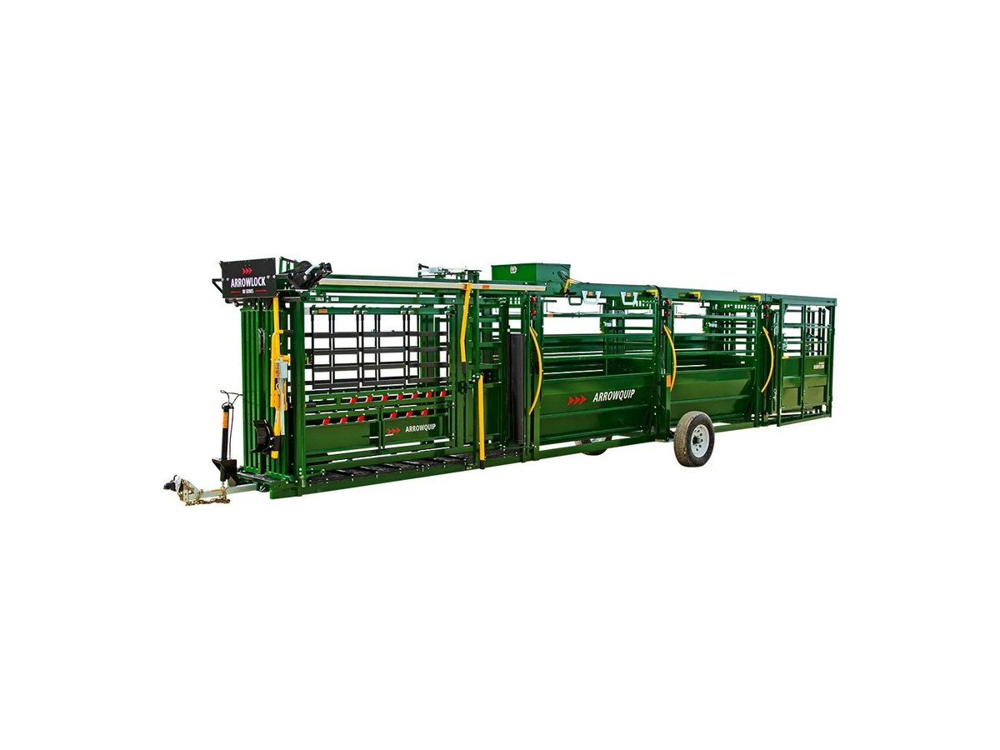
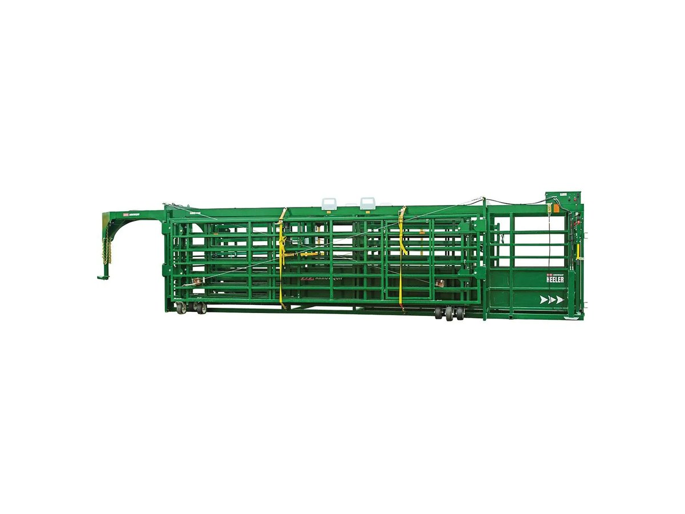
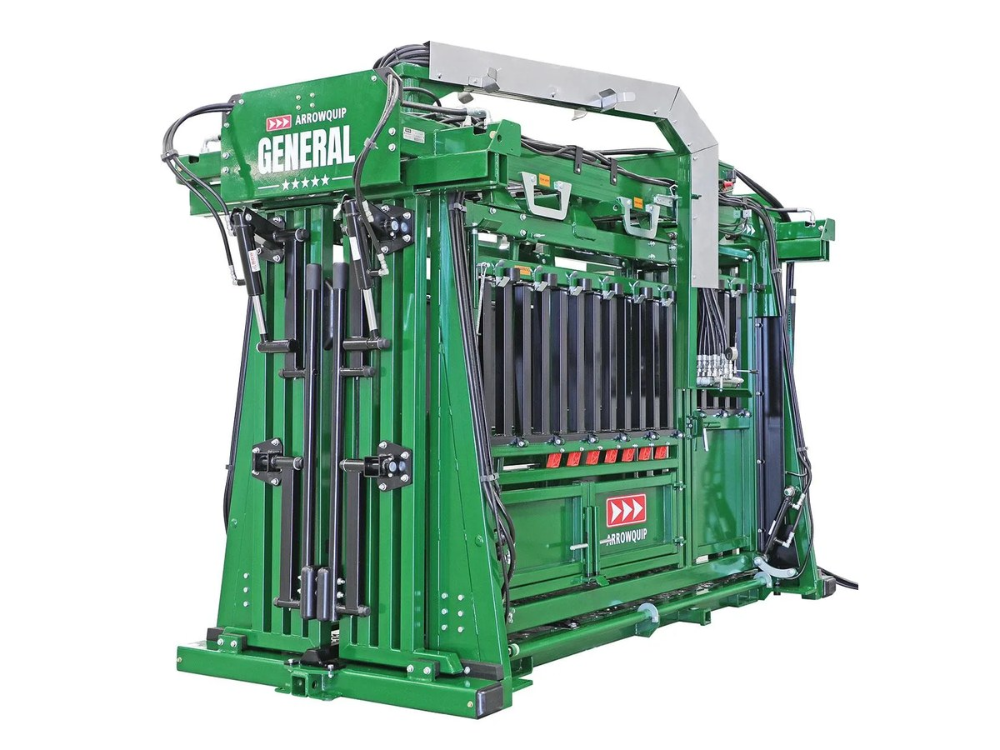
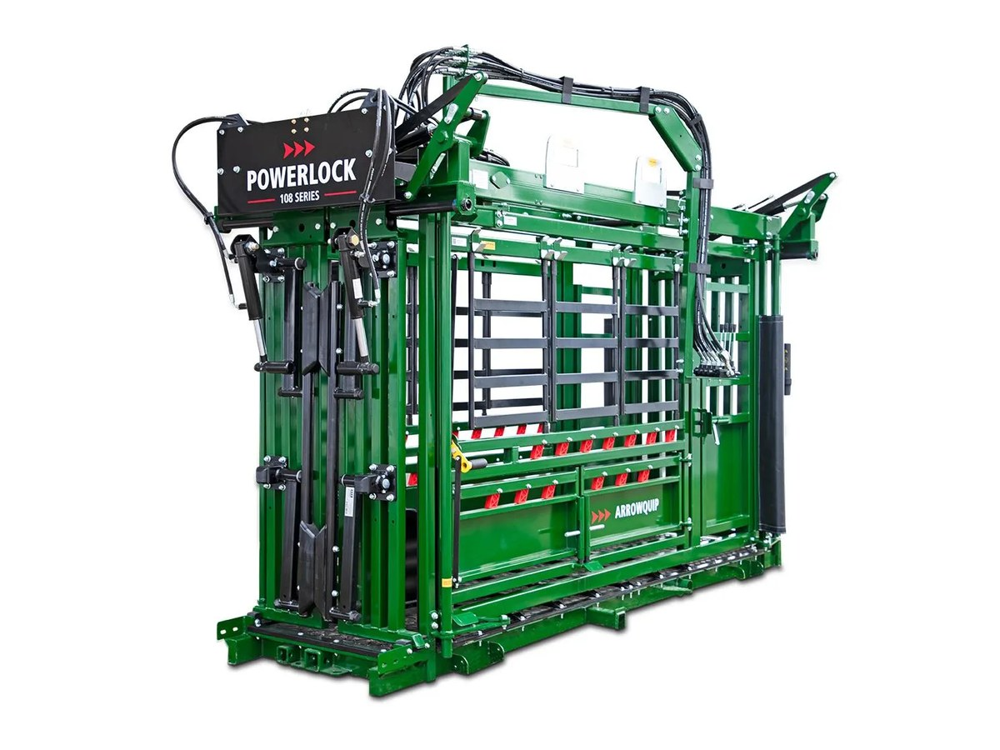
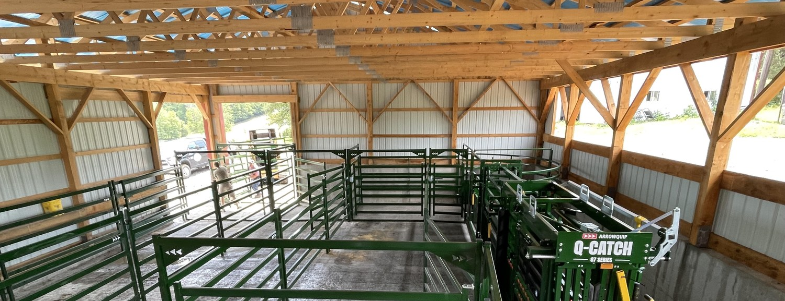

Arrowlock 55
Manual squeeze chute
The line starts here · worked by hand at the head gate
Arrowlock 55
Manual squeeze chute
The line starts here · worked by hand at the head gate

Double B Farm Supply
A new era
in cattle handling
is here
Chutes · Alleys · Tubs · Panels & Gates
Get pricingWhat we carry
Thirty-two Arrowquip units in six lines. Tap any tile for a closer look.
Arrowlock 55
Manual squeeze chute
The line starts here · worked by hand at the head gate

Arrowlock 75 Manual squeeze chute The middle of the line · one step up from the 55
Arrowlock 88 Manual squeeze chute Top of the manual line · the big brother of our hero chute
The Easy Flow Cattle alleys & ramps The lanes that feed the chute
The calving pen Pens & penning Calving pens and the parts that bolt on

The corral Portable handling equipment 9 units · hitch it and go

The 108 Hydraulic cattle chutes 5 units · one lever, one manReviews
Buying here since 2013
Their expertise and customer service made the purchasing process seamless and enjoyable. The 7508 unit itself is a game-changer.
Bryan Imes
Port Royal, PA · on doublebequip.com
great family business that takes care of their customers. good pricing good variety
Debbie Eckstine-Weidner
14 March 2019 · on Facebook
They know there industry and are great with the customers
Charles W. Kessler III
4 January 2019 · on Facebook
Commonly asked questions
What areas do you deliver cattle equipment to?
Pennsylvania, New York and New Jersey. We are based at McAlisterville in Juniata County, and we have set yards up at Port Royal, Carversville and Frenchville here in Pennsylvania, at Winthrop in New York and at Sandyston in New Jersey. If you are somewhere in that stretch, call and we will come and look at the ground.
Do you deliver and set the equipment up, or do I haul it myself?
We haul it and we set it up. Mike comes out and measures the ground, Arrowquip draws your yard to scale with the real dimensions on it, and then our own truck brings the steel from McAlisterville and we level it in place. The on-site visit, the drawing and the set-up come with every system.
How much does an Arrowquip squeeze chute cost?
Every yard is priced off its own drawing. Ring Mike with the size of your herd and how the ground lies, and you get a figure built on your layout with the units you actually need on it.
What is the difference between a manual and a hydraulic cattle chute?
A manual chute is worked by hand at the head gate — that is the Arrowlock 55, 75 and 88 Series. A hydraulic chute runs off a lever, so one man can put cattle through on his own, and there we carry the Powerlock 105 and 108 Series and the Major, the Colonel and the General.
Do you sell portable cattle handling equipment?
We do — portable is one of our six lines. It covers the Portable 75 and 88 chute-and-alley rigs, with or without a tub, the Powerlock 108 on a trailer, and the Heeler and Heeler 75C corrals. It hitches behind a truck and goes where the cattle are.
Get pricing
Tell Mike how many head you run and what you are working them with now — photographs of what you have now are the most useful thing you can send.
He comes out and measures the ground, and Arrowquip draws your yard to scale before anything is ordered.
